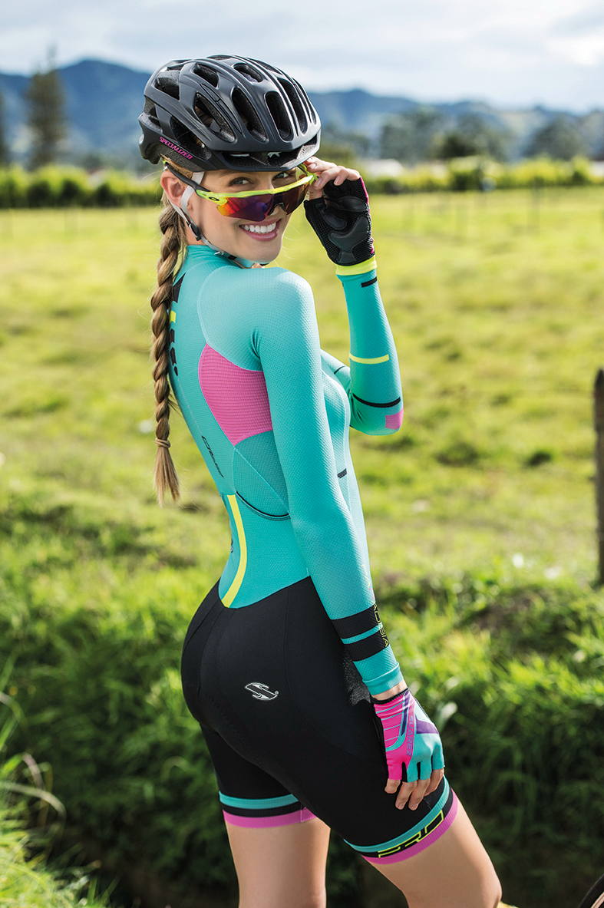

品牌介绍
早在1985年，JAVA意大利设计团队就在Grosseto发酵他们的设计思路，每一部JAVA自行车均源自意大利南部，这里气候温和，草木苍翠，是个终年适合玩车的地方，也是出产自行车好手的地方。2003年，我们的第一台MOKA山地车出现在中国大陆，开始了我们在中国市场的自行车旅程；2009年，我们开始从国外市场转移到中国大陆JAVA-CL小轮走入车友的视线！如今我们正朝着我们的方向前行！
产品特色
JAVA的设计部门一直告诉自己坚持什么去找寻消费者需要地产品。而不是这个市场固有的潮流，那些对于我们而言有点格格不入！灵感源自旅行、餐厅、骑玩、乐聚 、街头时尚和各种对生活的感悟。一旦这种色彩元素印象在脑海中，实际的设计工作就开始了。所以公司主管也无法确认设计师在一个月内的工作是什么，也许就是玩，因为只要在玩车上投入天真才会激发更多可能
价值体系
从2003年开始我们面向中国市场开放了超过200余款产品，以满足客户对不同路面需求及生活需要。对JAVA而言,至关重要的就是系列产品让客户产生“磁性”，,这就要求我们不断开放和客人相处，使得新的生产模式变得更简单！
- 质量------
- 40%
- 时尚------
- 30%
- 性价比------
- 30%
THE BYCYCLE OF CANNONATA
空气动力车型
JAVA（佳沃）首发全新旗舰产品——CANNONATA康纳塔。以其奢华品质和骑程舒适性将为中高端公路车市场树立新的标杆，其向车迷传递了“意式设计与AIR工程学”的中高端公路车理念。和去年3月JAVA（佳沃）上市的FEROCE费罗切中级公路车，一举拿下JAVA全球最大的单一产品市场份额。JAVA自行车品牌此次将CANNONATA康纳塔作为2016全球首发产品，也充分显示了JAVA自行车品牌对中国中高端自行车市场的重视及信心！

车架提供红、白、黄三个色款选择，工艺精湛，极具意式风潮。同时在车架成型工艺上进行系统性设计，全新地EPS内膜成型工艺，只有极少数顶级品牌才有的工艺基础！
EPS内模成型工艺是CANNONATA最大的亮点。它是通过内模和外模双模系统完成，这是根本意义上地工艺改进，当然，当JAVA根据科学地数据确认较少地材料可以通过单层碳布完成布砂时，可看到一个完美的车架诞生（内壁光滑细腻，同时兼具更好地韧性和强度）
压入式BB，提供一个更广泛地中轴空间，额外地1.20CM加宽设计确保发力时更好的横向刚性。使之中管的下方有效加粗，同时贴近更紧密地后轮结构，形成更完美地踩踏体验！